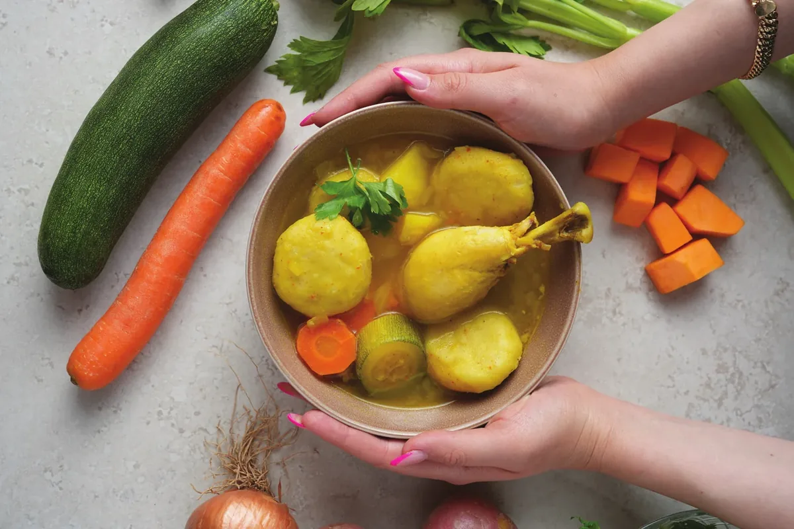
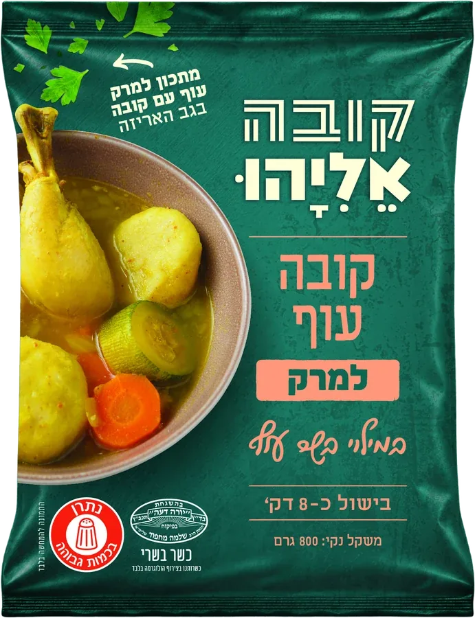
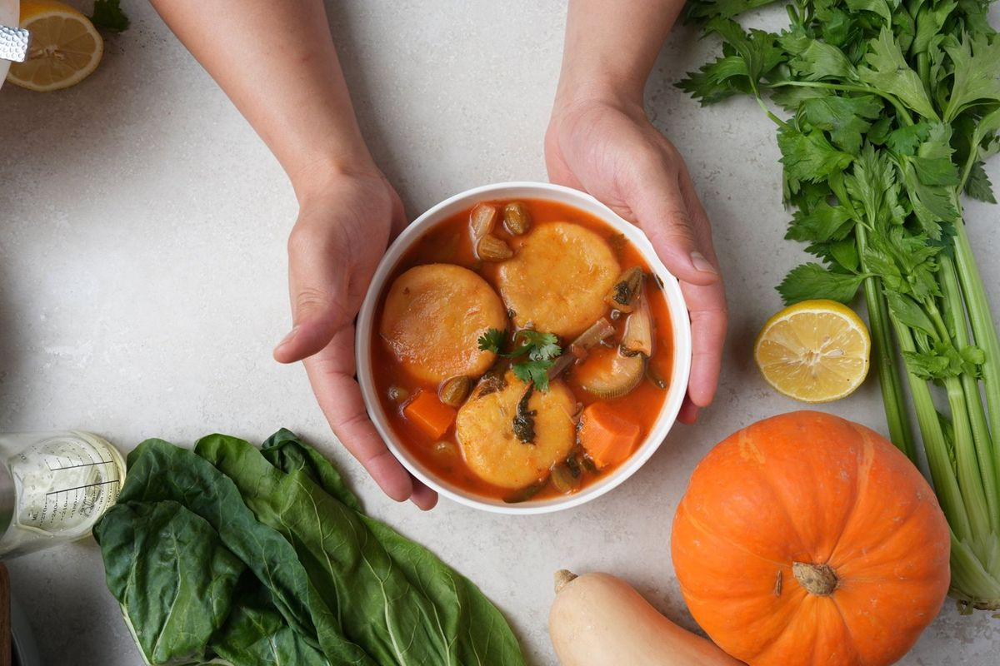
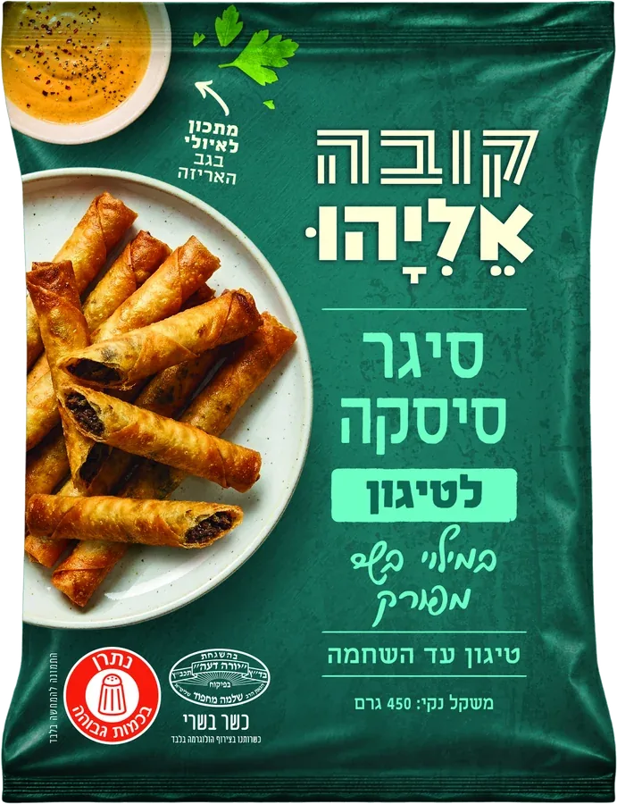

מהגב של האריזה, למטבח שלכם
המתכונים של סבתא
כל אריזה של קובה אליהו מגיעה עם מתכון שמתאים לה בדיוק. כאן הם מחכים לכם במלואם, צעד אחר צעד.



המתכון הזה מתאים ל-קובה עוף למרקלפרטי המוצר
למרק · ל-6–8 מנות
מרק לקובה עוף
מצרכים
- ירקות: 1 בצל גדול (קצוץ), 2 גזרים (פרוסים), 2 גבעולי סלרי עם העלים (חתוכים), 1 קישוא (פרוס), 1 תפוח אדמה (חתוך לקוביות)
- עשבי תיבול: צרור פטרוזיליה וכוסברה קשורים
- נוזלים: 8 כוסות מים
- תיבול: 1/2 כפית כורכום, 1/2 כפית כמון, מלח ופלפל שחור לפי הטעם
- שמן: 3 כפות שמן זית או קנולה
- ואת העיקר: אריזת קובה עוף של קובה אליהו
הוראות הכנה
- טיגון הירקות: בסיר גדול מחממים שמן ומטגנים את הבצל עד להזהבה. מוסיפים את הגזר, הסלרי, הקישוא ותפוח האדמה ומטגנים כ-5 דקות.
- תיבול ונוזלים: מוסיפים את התבלינים (כורכום, כמון, מלח, פלפל) ומערבבים חצי דקה. מוזגים את המים ומוסיפים את צרור עשבי התיבול.
- בישול הירקות: מביאים לרתיחה, מנמיכים את האש, מכסים ומבשלים כ-20 דקות עד שהירקות מתחילים להתרכך.
- הוספת הקובה: מחליקים פנימה בעדינות את הקובות אל המרק הרותח.
- סיום: מבשלים על אש קטנה עוד כ-10 דקות עד שהקובות מבושלות לחלוטין (מנענעים את הסיר בעדינות מדי פעם, ללא ערבוב בכף).


המתכון הזה מתאים ל-קובה סיסקה למרקלפרטי המוצר
למרק · חמצמץ
מרק חמוסטה
מצרכים
- 1 בצל קצוץ
- 4 גבעולי מנגולד
- 3 גבעולי סלרי קצוצים
- דלעת מים / קישואים
- כפית פלפל שחור
- מלח לפי הטעם
- חצי כוס לימון סחוט
- אריזת קובה סיסקה של קובה אליהו
הוראות הכנה
- מטגנים בצל עד להשחמה, מוסיפים חצי מכמות המנגולד והסלרי הקצוצים ומטגנים קלות.
- מוסיפים את דלעת המים / הקישואים ומים עד לכיסוי הירקות.
- מביאים לרתיחה ומוסיפים את יתר הירק. מוסיפים את הקובות הקפואות על להבה גבוהה, וכשהמרק חוזר לרתוח מורידים ללהבה בינונית עד שהקובות מוכנות.
- מכבים, מוסיפים לימון סחוט לפי הטעם וממתינים עוד 5 דקות. בתיאבון!


המתכון הזה מתאים ל-קובה מטפוניה למרקלפרטי המוצר
למרק · מתקתק-חמצמץ
מרק סלק
מצרכים
- 1 בצל קצוץ
- 4 סלקים קלופים, חתוכים לרצועות
- 1 בטטה
- 3 גבעולי סלרי / מנגולד (אפשר גם וגם)
- כף רסק עגבניות
- כפית פלפל שחור
- שלוש כפות סוכר
- כפית וחצי מלח (לפי הטעם)
- לימון סחוט
- אריזת קובה מטפוניה של קובה אליהו
הוראות הכנה
- מטגנים בצל להשחמה, מוסיפים את הסלקים החתוכים וממלאים כ-2 ליטר מים רותחים (חשוב להשאיר מקום בסיר ולא למלא עד הסוף).
- מוסיפים את התבלינים. לאחר רבע שעה מוסיפים את הבטטה ואת עלי הירק השטופים.
- כשהמרק מבעבע מוסיפים את הקובה ומבשלים על אש נמוכה 10 דקות.
- מכבים את הגז, מוסיפים לימון סחוט לפי הטעם וממתינים עוד כ-5 דקות... ובתיאבון!


המתכון הזה מתאים ל־הקובה של סבתא אסנת למרקלפרטי המוצר
למרק · ל־6–8 מנות · חמוץ-מתוק
מרק במיה
רכיבים למרק (לכ-6–8 מנות)
- במיה: 400 גרם במיה (טרייה או קפואה)
- בצל: 1 בצל גדול, קצוץ דק
- עגבניות: 2 עגבניות רכות מגוררות + 3 כפות רסק עגבניות
- נוזלים: 6 כוסות מים
- תיבול: מלח ופלפל שחור לפי טעם
- חמוץ-מתוק: 1/3 כוס מיץ לימון טרי + 2 כפות סוכר
- שמן: 3 כפות לטיגון
שלבי ההכנה
- בסיס: מטגנים את הבצל בשמן עד להזהבה. מוסיפים עגבניות מגוררות, רסק עגבניות, מלח ופלפל ומטגנים כ-2 דקות.
- בישול הרוטב: מוסיפים את המים, מיץ הלימון והסוכר. מביאים לרתיחה ומאזנים טעמים (חמוץ-מתוק).
- הוספת הקובה והבמיה: כשהמרק מבעבע, מחליקים פנימה את הקובות ואת הבמיה.
- סיום: מבשלים על אש קטנה מכוסה חלקית כ-10 דקות (מנענעים את הסיר בעדינות מדי פעם, ללא ערבוב בכף).
בתאבון!


הרוטב המושלם ל-קובה נבולסיה לטיגוןלפרטי המוצר
רוטב · להגשה עם נבולסיה
טחינה ירוקה
רכיבים
- 1 כוס טחינה גולמית איכותית
- 3/4 כוס מים קרים מאוד (עם קוביות קרח)
- 1/2 כוס מיץ לימון טרי
- 1 שן שום (או 2 לחובבי שום)
- 1/2 כפית מלח (לפי הטעם)
- 1/2 כפית כמון (רשות)
- 1/2 חבילה פטרוזיליה רעננה
- 1/2 חבילה כוסברה (אפשר להחליף בפטרוזיליה נוספת / נענע / נענע ובזיליקום)
אופן ההכנה
- טחינת הירוקים: מעבירים למעבד מזון או לבלנדר את צרור הירוקים (ללא גבעולים עבים), שן השום, מיץ הלימון והמים הקרים. טוחנים היטב עד לקבלת נוזל ירוק, אחיד וחלק.
- איחוד: מוסיפים את הטחינה הגולמית, המלח והכמון.
- ערבול והתאמת מרקם: מפעילים את מעבד המזון בפולסים עד לקבלת מרקם קרמי ואחיד.
סמיך מדי? מוסיפים 1–2 כפות מים קרים וטוחנים שוב.
דליל מדי? מוסיפים עוד 1–2 כפות טחינה גולמית.
טיפ למרקם ולצבע פוטוגני: מים קפואים מונעים מלהבי הבלנדר לחמם את העשבים — וכך הצבע נשאר ירוק בוהק ולא מחמצן.



הרוטב המושלם ל-סיגר סיסקה לטיגוןלפרטי המוצר
רוטב · מתקתק-פיקנטי
איולי
מצרכים
- 1/2 כוס מיונז
- 1 כף סילאן (או דבש)
- 1 כפית חרדל (חריף או דיז׳ון)
- 1 שן שום כתושה
- 1/2 כפית פפריקה מתוקה
- קורט מלח ופלפל שחור
הוראות הכנה
- בקערה קטנה מערבבים את המיונז, הסילאן, החרדל והשום.
- מוסיפים את התבלינים (פפריקה, מלח ופלפל).
- טורפים היטב במזלג עד לקבלת רוטב אחיד, חלק ובצבע ענברי-זהוב.
שדרוג קטן לאירוח: אם רוצים נגיעה חריפה קלה, אפשר להוסיף 1/4 כפית פלפל חריף יבש (צ׳ילי גרוס) או מעט פפריקה חריפה.
נשאר רק להביא את הקובה